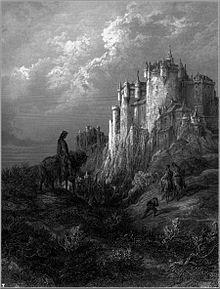

Home of King Arthur himself, Camelot is sometimes described as just a castle, other times an entire city under Arthur's rule. It is also the meeting place of Arthur's Knights of the Round Table.
Today, there are many different castles in Britain that are claimed to be the "original" Camelot. That is, the original castle that the Camelot of legend is based off of.
However, most of these claims are simply to encourage tourism of each castle. Due to the legend's age and adaptive nature, it is likely that the "true" Camelot will never be known.
Go back